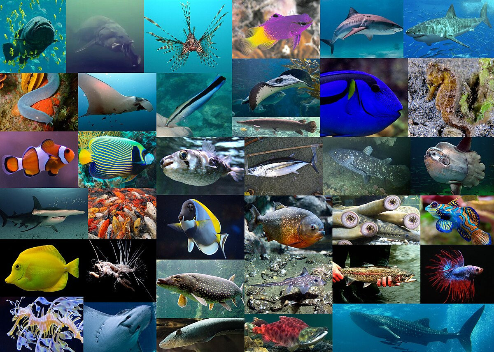
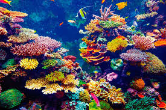

Inicio
1.Vida Marina
2.¿Que estudia la vida marina?
3.Biologia
4.Ramas de la biologia
5.Ecologia
6.Ramas de la ecologia
7.Oceanografia
8.Ramas de la oceanografia
9.Curiosidades de la vida marina
10.Estadisticas de la vida marina
salir
comenzar
Ir al inicio del articulo
Ir al inicio del articulo

